Activity: Creating a wire harness with Electrical Routing
This activity guides you through the creation of a harness design that contains several wires, a cable, and a bundle.
Click here to download the activity file.
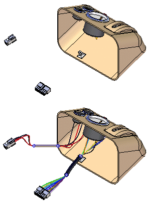
Open the assembly harness.asm.
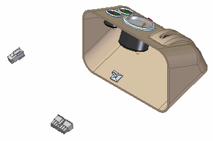
Click Tools tab→Environs group→Electrical Routing.
The system displays the Electrical Routing environment. The ribbon contains the commands you use to create wire harness conductors (wires, cables, or bundles).
You will use PathFinder for most of this activity.
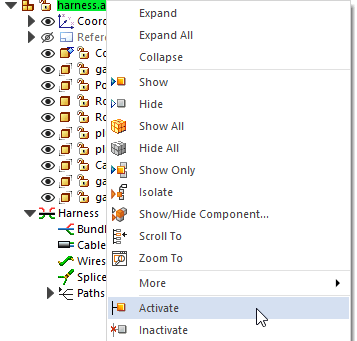
This activity requires that the parts in the assembly are active. Several factors determine whether or not all parts within the assembly are active on your computer.
To ensure that the parts are active, in PathFinder, right-click harness.asm, and from the shortcut menu, click Activate.
The Harness Wizard consists of three dialog boxes that create a harness design automatically based on information contained in an imported net list file.
On the ribbon, click Home tab→Wizard group→Harness Wizard .
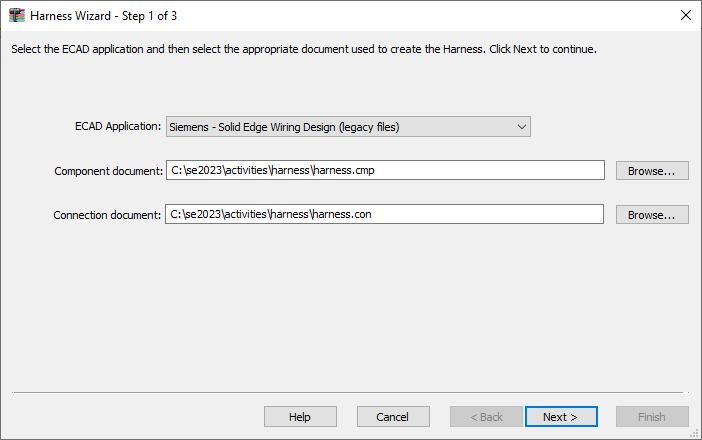
The Harness Wizard - Step 1 of 3 dialog box specifies:
-
The format for the eCAD net list file.
-
The component document used to create the harness.
-
The conductor document used to create the harness.
From the ECAD Application list, select Siemens — Solid Edge Wiring Design (legacy files).
In the Component document box, use the Browse button to select harness.cmp from the folder where you saved the activity files.
In the Connection document box, use the Browse button to select harness.con from the folder where you saved the activity files.
Click Next.
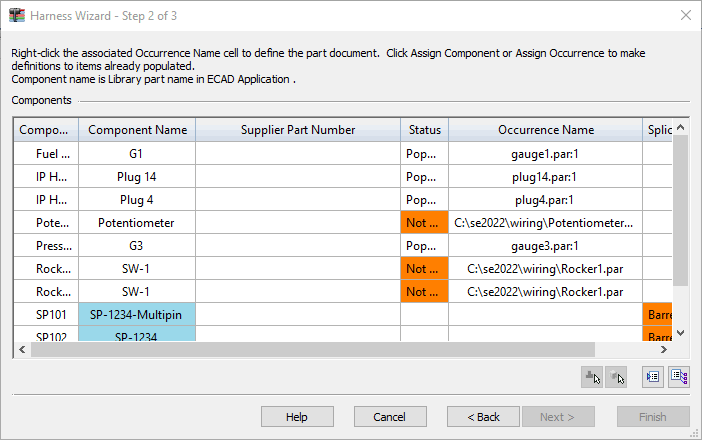
The Harness Wizard - Step 2 of 3 dialog box displays information about the components used to create the wire harness. The dialog box contains commands and options that allow you to:
-
Assign components.
-
Assign occurrences.
-
Populate components.
Notice that the status for component Potentiometer is Not Populated. This indicates that the component has not been assigned to a part. Normally, you would use the Assign Terminals command to assign components and terminals before running the wizard. However, if this has not been done, you can make these assignments within the wizard.
Also notice that there are multiple instances of component SW-1. You will use the Assign Occurrence command to ensure these instances are mapped to the appropriate .cmp file entry.
Right-click the fist instance of the row containing Rocker SW-1 and click Assign Occurrence.
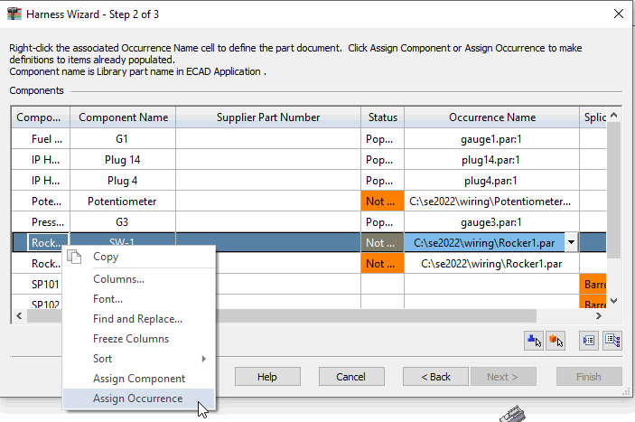
In the graphics window, click Rocker1.par:1, as shown in the illustration.
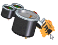
Right-click the next occurrence of the row containing Rocker SW-1 and click Assign Occurrence.
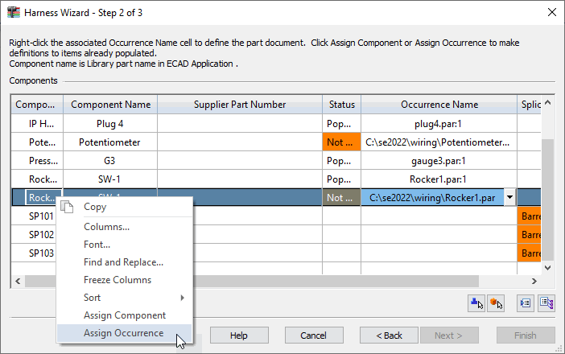
In the graphics window, click Rocker1.par:2, as shown in the illustration.
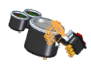
Right-click the row containing Potentiometer and click Assign Component.
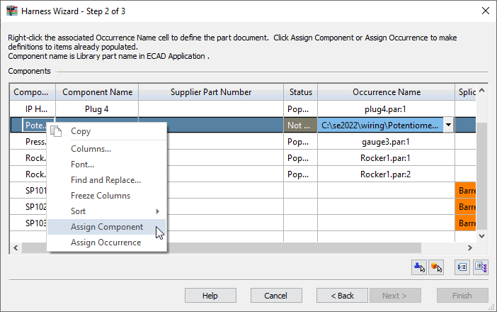
In the graphics window, click Potentiometer2.par, as shown in the illustration.
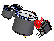
Notice that the dialog box updates to indicate the status of the components is now populated
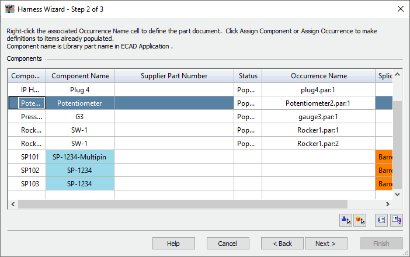
Click Next.
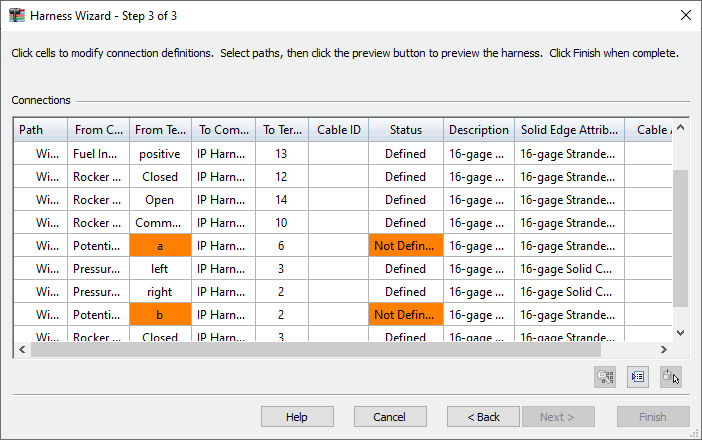
The Harness Wizard - Step 3 of 3 dialog box displays information about the conductors used to create the wire harness. The dialog box contains commands that allow you to:
-
Assign terminals.
-
Delete wires from the harness.
-
Assign attributes to a wire or cable.
-
Preview the harness.
Notice that there are three entries in the From Terminal column highlighted in orange. The status for these terminals is Not Defined. These represent terminals on the Potentiometer component that need to be defined.
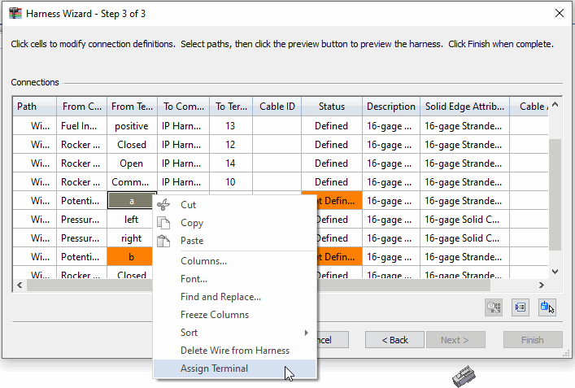
In the From Terminal column, right-click a and click Assign Terminal.
On the status bar at the bottom of the window, click Zoom Area .
Click above and to the left of Potetionmeter2.par, and then again below and to the right as shown in the illustration. This defines a rectangle that becomes the view area.
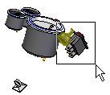
Right-click to end the Zoom Area command.
To assign terminal a, click the circular edge.
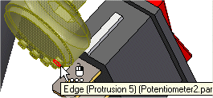
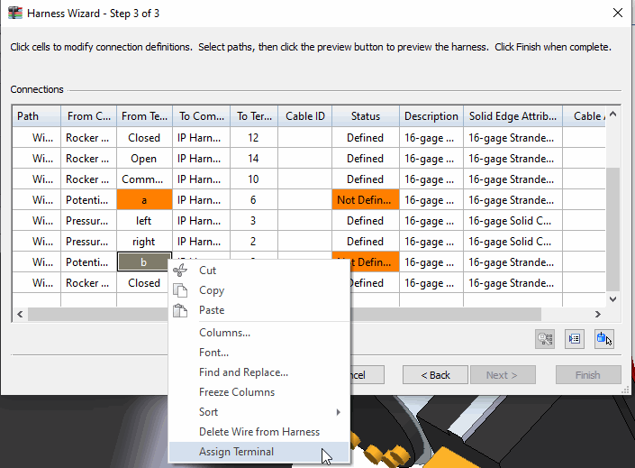
In the From Terminal column, right-click b and click Assign Terminal.
Click the circular edge to assign the terminal.
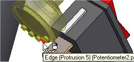
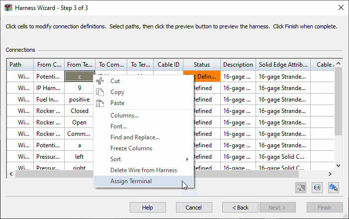
In the From Terminal column, right-click c and click Assign Terminal.
To assign the terminal, click the circular edge
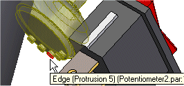
To complete the wizard, click Finish.
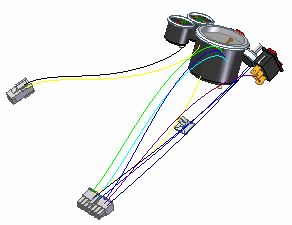
To fit the assembly in the window, click the View tab→Orient Group→Fit command.
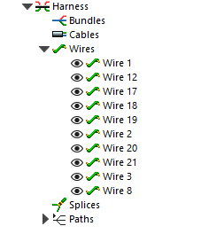
In PathFinder, click the Expand/Collapse symbol adjacent to the Wires entry.
Notice entries have been added for every wire created with the Harness Wizard.
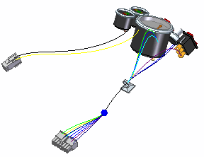
The Bundle command creates a harness bundle from a set of wires and cables. The result is a single path that can be created across several components within the harness assembly. When defining the path, you can define points to create the path or you can select an existing path created with the Path command. For this bundle, a path has already been created.
In PathFinder, click the Expand/Collapse symbol to the Paths entry.
You may have to scroll down in PathFinder to see the Paths collector.
Right-click Path_1 and on the shortcut menu, click Show Connected Components.
Click the Home tab→Electrical Routing group→Bundle command .
Drag a box around plug14.par, as shown in the illustration, to select the wires to include in the bundle.
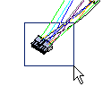
Click the Accept button  .
.
On the command bar, select Use Existing Path  .
.
Click the existing path shown in the illustration.
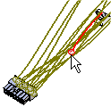
Click the Accept button  .
.
Click Preview and then click Finish.
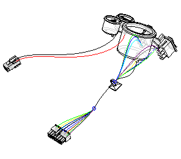
On the Home tab→Style group, click the Visible and Hidden Edges command .
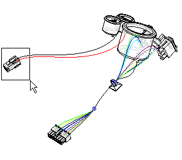
On the status bar at the bottom of the window, click the Zoom Area button.
Click above and to the left of plug4.par, and then again below and to the right of the fan as shown in the illustration. This defines a rectangle that becomes the view area.
Right-mouse to end the Zoom Area command.
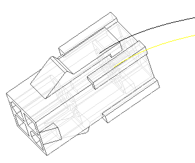
Click the Home tab→Electrical Routing group→Wire command
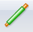
.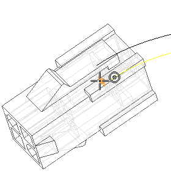
In the command bar, make sure the Create Path button is selected .
Click the Locate Filter button .
From the list of keypoints, select the Center Point button  .
.
Locate the center point shown in the illustration, and when it highlights, click to select it.
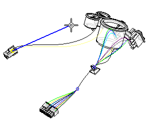
Click View tab→Orient Group→Fit to fit the assembly in the window.
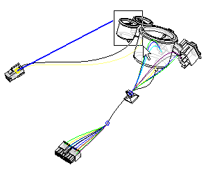
Use the Zoom Area command to zoom in on the area shown.
Right-click to end the Zoom Area command.
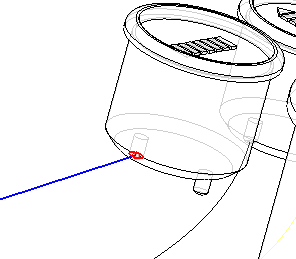
Locate the center point shown in the illustration, and when it highlights, click to select it.
Position the cursor above and beyond the terminal as shown in the illustration, and right-click to accept the end point.
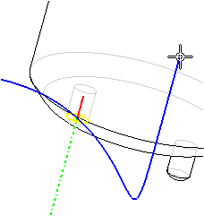
In the command bar, set the Material as shown in the illustration.
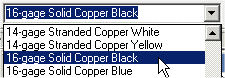
Click the Preview button.
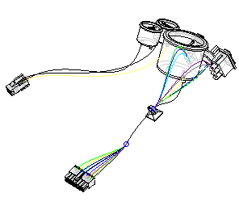
To complete the wire, click Finish.
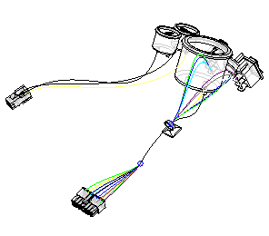
Click View tab→Orient Group→Fit to fit the assembly in the window.
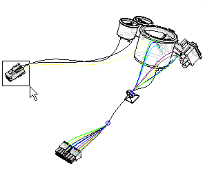
Select the Zoom Area command .
Zoom in on plug4.par. Right-click to end the command.
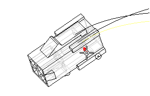
Click Home tab→Electrical Routing group→Wire .
Use the same options you used to create the first wire.
Select the circular edge shown in the illustration to define the first point for the wire.
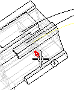
To define the end point for the wire, zoom out and select the circular edge shown in the illustration.
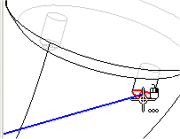
Position the wire as shown in the illustration and click the Accept button.
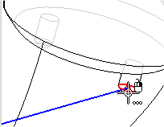
Set the Material as shown in the illustration.
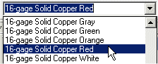
Click Preview.
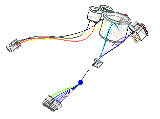
Click the Finish button to complete the wire.
Click View tab→Orient Group→Fit to fit the assembly in the window.
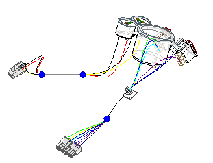
Click the Home tab→Electrical Routing group→Cable command
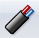
.Drag a box around plug4.par, as shown in the illustration, to select the wires to include in the cable.
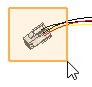
Click the Accept button  .
.
Make sure the Create Path button is selected  .
.
Create a path using the Line command as shown in the illustration.
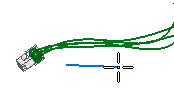
Set the Material to 22/15-gage Stranded Copper Gray as shown in the illustration.
Click Preview and then click Finish.
On the status bar at the bottom of the window, click View Styles, then click Shade with Visible Edges .
Click the Home tab→Select group→Select command  .
.
In PathFinder, right-click the Harness entry to display the shortcut menu.
On the shortcut menu, click Create Physical Conductor.
The system processes for a few seconds, then solid bodies are created for the harness conductors.
Click View tab→Orient Group→Fit to fit the assembly in the window.
You can create a report that lists the components and connections contained in an assembly.
Click Tools tab→Assistants group→Harness Reports.
In the Harness Report dialog box:
-
Select the Connections option.
-
Select All harness connections in the assembly.
-
To generate the report, click OK.
A report dialog box displays a list of cables expanded into an indented list of the wire paths.
You can generate a report based on all components or connections in the assembly, the components or connections that are currently shown in the assembly, or the components or connections that are currently selected in the assembly. You can save reports, print reports, and copy reports to the clipboard.
-
To dismiss the report, click Close.
Click the Tools tab→Close group→Close Electrical Routing command  .
.
To save the document, on the Quick Access toolbar, click Save  .
.
Activity complete. Try modifying the wires using the Properties dialog box.